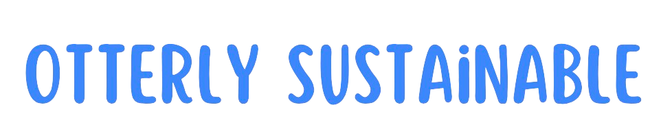
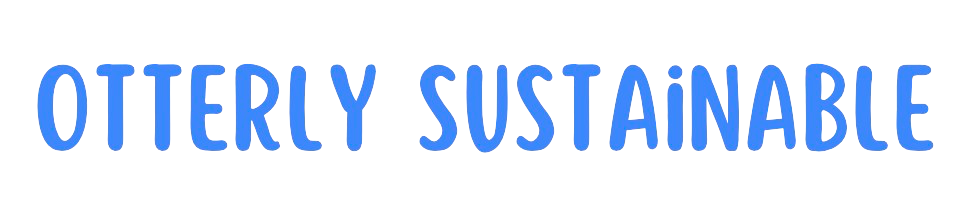
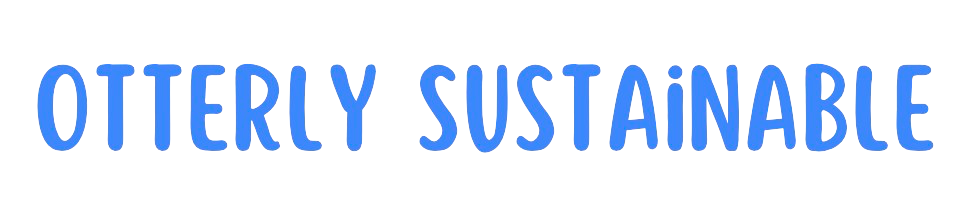
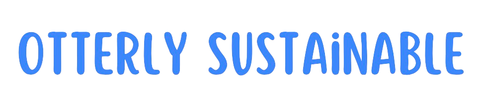

Otterly Sustainable, we're driven by a profound respect for nature and a commitment to harnessing its energy in innovative ways. Our project revolves around utilizing Vortex Induced Vibrations (VIV) derived from the majestic Fergus River and its vibrant ecosystem. By harmonizing with the natural rhythms of the river and its inhabitants, we strive to pioneer a new era of eco-friendly energy production for Ennis and beyond.

Our primary objective at Otterly Sustainable is clear: to leverage the untapped potential of Vortex Induced Vibrations (VIV) as a sustainable energy source for Ennis. By harnessing the inherent power of the Fergus River and its resident wildlife, we aim to contribute to the energy needs of our community while minimizing our environmental footprint. Through collaboration, innovation, and a deep-seated commitment to environmental stewardship, we endeavor to create a brighter, greener future for generations to come.